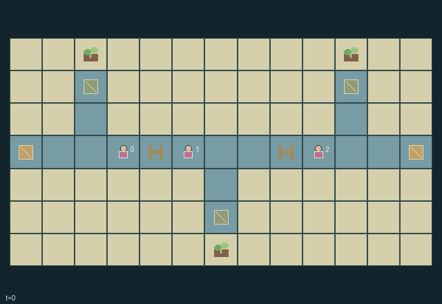

GI208 · Canal Compact

Deliver each settlement's single cargo to its destination while choosing how much finite local water to spend on passage versus private crops.
Identity and original contract
3 independently actionable roles; 13 discrete commands per role; 237 native observation columns per role; original horizon 150 steps. Declared per-step reward range: -6 to 6. Observation regime: partially_observable.
Source SHA-256: 60fbff4f9b125b8fe475cc9baf48d0318708e6be00b77b3f7326906386673e6b
The objective, rewards, population, map and horizon remain original. A preview is not a success claim.
Objective and gameplay
Deliver each settlement's single cargo to its destination while choosing how much finite local water to spend on passage versus private crops.
Nearby boats can commit water or drain a common lock, enabling or preventing peer entry/exit. Contrary commands empty the lock, cause public flood damage and push trapped boats. Berth reservations change spatial opportunities; dated reports reveal only a prior local level.
- A lock has low level zero, intermediate one and high two. Entry or exit on its west side needs high; its east side needs low.
- Commit one own water unit or drain a nearby lock. Commands resolve before same-step movement requests, so a peer can enable passage.
- Opposed fill/drain commands at one lock cause a surge: its water is released, an adjacent settlement field is flooded and a boat inside is pushed east if clear.
- A blocked surge loses the trapped boat's cargo. Three flood alarms or lost cargo ends the episode; all three deliveries complete it.
- Reserve a side berth for six ticks or release it. Actual occupied boat cells still block entry and rotating priority resolves contested moves.
- Own water also irrigates a local field for private harvest reward. Water supply is finite; drained or irrigated units cannot be recovered.
- Signal from beside a lock to send its current level and clock. Each receiver sees a dated snapshot for five transitions, not remote live updates.
- Native policy/human actions and observations are the same. Scripts are unexecuted author hypotheses.
Ending: All three cargos delivered is success. Three flood alarms or any cargo lost in a blocked surge is failure unless success; otherwise cap at 150.
What this game explores
Resource commons & externalities: An action changes a persistent resource or burden that another role also encounters. Compare extraction with maintenance and record the downstream resource trajectory.
Information, sensing & communication: Who knows a fact, when it was measured, and whether it was communicated are separate state variables. Test memory or communication using only the same role-visible evidence.
Commitment, exchange & governance: Promises consume time, liquidity, access or material. Separate an announced agreement from a binding commitment and from its eventual delivery; log cancellation and expiry too.
Joint transport & shared access: Positions, load geometry, occupancy and persistent access constrain whose action can succeed next. Distinguish physical handoff, shared controls and simultaneous force from a cosmetic cooperation label.
Team opposition & interception: Cooperation within a team can coexist with opposition between teams. Preserve team membership, capture and possession rules, and report each team's outcomes instead of assuming a single shared return.
Survival, protection & rescue: Protection and repair alter another role's future feasible actions. Record losses, exposure, rescue and infrastructure as well as delivery; survival is determined by the actual kernel.
These are questions supported by rule structure, not observed learning effects.
Play it: operating walkthrough
crucibles play --game gi208Keep Python running and open its printed address. Select this game, set a seed and press Create session. The game itself is always English.
Assign a role range to Host with Assign / take over, or Assign all roles. Invite a second participant with Create player invitation, then assign a disjoint subset. Every original role is available.
For every owned role choose a legal command and press Queue. Arrow keys / WASD queue a declared directional action for the current role camera when available. Space or Advance one joint step advances everyone together. Non-directional games use the selectors.
Unqueued roles use the labelled untrained uniform-legal policy. Take over or release roles before the next step without resetting. Full-state debug is privileged and permanently logged; role cameras preserve permissions. Close the session to retain logs. Server restart does not restore sessions.
Complete command reference
IDs and English labels exactly match the manifest. Availability depends on role, resources, location and phase. An available action can still have no productive effect.
0·Wait
1·Request canal step north
2·Request canal step east
3·Request canal step south
4·Request canal step west
5·Commit one own water unit to nearby lock
6·Drain nearby lock one level downstream
7·Reserve nearby available berth for six ticks
8·Release own nearby berth reservation
9·Irrigate own nearby field with one water unit
10·Deliver cargo at own destination dock
11·Harvest own nearby ready field
12·Broadcast dated nearby lock-level report
Roles and capability identifiers
These original role names describe capabilities, not interchangeable skins. Check each owned role's legal selector before planning handoffs.
agent_0·Western boat and settlement water owner
agent_1·Middle boat and settlement water owner
agent_2·Eastern boat and settlement water owner
Information and observation permissions
Canal layout, cargo destinations, delivery flags/totals and flood alarm are public. Boats, actual lock state, berths and fields are visible within Manhattan radius three. Own unexpired message records explicitly carry send time and snapshot level; reports never reveal a changing remote live state.
The GIF is full-state debug and may reveal hidden entities or private state. Train on obs[agent], not the picture, state tree or another role's private row. Field slices and visibility are in the original manifest.
Reinforcement-learning integration
import jax
from crucibles_jaxmarl import make
env = make("gi208")
key = jax.random.PRNGKey(0)
key, rk, ak, sk = jax.random.split(key, 4)
obs, state = jax.jit(env.reset)(rk)
actions = env.sample_actions(ak, state)
obs, state, rewards, dones, info = jax.jit(env.step_env)(sk, state, actions)
done = dones["__all__"]Observations are float32 vectors of width 237; actions are scalar int32; masks have 13 entries. Supply all 3 roles each transition. Masked sampling is an engineering reference, not a trained learner.
step_env retains terminal data without reset. step performs outer autoreset and keeps terminal data in info["raw_state"] and info["raw_observation"]. Use dones["__all__"] for episode boundaries; separate completion, failure and time limit in analysis.
JIT or vmap equal identities and shapes. Split independent reset, policy and transition keys. Group different shapes explicitly; do not shrink the population or horizon. Host rendering stays outside training.
Training questions and fair evaluation
Define valid completion from the objective before fitting. Preserve original rewards and also report real deliveries/services, losses, resource state, unresolved episodes and per-role returns. Animation is not a reward signal.
An action changes a persistent resource or burden that another role also encounters. Compare extraction with maintenance and record the downstream resource trajectory.
Who knows a fact, when it was measured, and whether it was communicated are separate state variables. Test memory or communication using only the same role-visible evidence.
Promises consume time, liquidity, access or material. Separate an announced agreement from a binding commitment and from its eventual delivery; log cancellation and expiry too.
Positions, load geometry, occupancy and persistent access constrain whose action can succeed next. Distinguish physical handoff, shared controls and simultaneous force from a cosmetic cooperation label.
Cooperation within a team can coexist with opposition between teams. Preserve team membership, capture and possession rules, and report each team's outcomes instead of assuming a single shared return.
Protection and repair alter another role's future feasible actions. Record losses, exposure, rescue and infrastructure as well as delivery; survival is determined by the actual kernel.
Compare memory, communication or centralized critics under matched actor information. Declare critic access; keep actor inputs role-filtered. Match partner/opponent distributions, masks, compute and checkpoint selection. Final tests never enter fitting or selection.
Independent training runs or source-pairing blocks are inferential units; episodes from one policy are not independent training replications. Save hashes, keys, versions, device, time and cost. Negative, zero, failed and indeterminate outcomes are valid. No trained checkpoint or target score is supplied.
Classification and evidence
Overlapping editorial labels are reading aids, not proof of novelty, difficulty, strategic equivalence or learning effects.
- Resource commons & externalities
- Evidence
manifest.task.objective: Deliver each settlement's single cargo to its destination while choosing how much finite local water to spend on passage versus private crops.
- Evidence
manifest.actions.5: Commit one own water unit to nearby lock
- Evidence
manifest.actions.9: Irrigate own nearby field with one water unit
- Information, sensing & communication
- Evidence
manifest.task.objective: Deliver each settlement's single cargo to its destination while choosing how much finite local water to spend on passage versus private crops.
- Evidence
manifest.actions.12: Broadcast dated nearby lock-level report
- Evidence
scene.rules.5: Own water also irrigates a local field for private harvest reward. Water supply is finite; drained or irrigated units cannot be recovered.
- Commitment, exchange & governance
- Evidence
manifest.actions.5: Commit one own water unit to nearby lock
- Evidence
manifest.actions.8: Release own nearby berth reservation
- Evidence
scene.rules.1: Commit one own water unit or drain a nearby lock. Commands resolve before same-step movement requests, so a peer can enable passage.
- Joint transport & shared access
- Evidence
manifest.task.objective: Deliver each settlement's single cargo to its destination while choosing how much finite local water to spend on passage versus private crops.
- Evidence
manifest.actions.1: Request canal step north
- Evidence
manifest.actions.2: Request canal step east
- Team opposition & interception
- Evidence
scene.rules.4: Reserve a side berth for six ticks or release it. Actual occupied boat cells still block entry and rotating priority resolves contested moves.
- Survival, protection & rescue
- Evidence
scene.rules.2: Opposed fill/drain commands at one lock cause a surge: its water is released, an adjacent settlement field is flooded and a boat inside is pushed east if clear.
- Evidence
scene.rules.3: A blocked surge loses the trapped boat's cargo. Three flood alarms or lost cargo ends the episode; all three deliveries complete it.
Source, receipts and preview limits
The world-only English GIF replays saved untrained legal actions through the original kernel. At most 25 actual endpoints include initial and terminal state; no invented interpolation. It is full-state debug, not the role observation.
Original source, observation slices, manifest and mechanism
Native receipt · Presentation receipt
Engineering passes do not establish learning. Nonzero floating differences remain recorded and undetermined; no new tolerance was introduced. Human scores remain unverified.